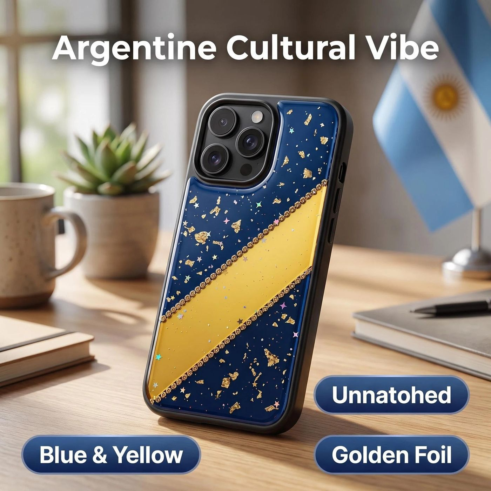
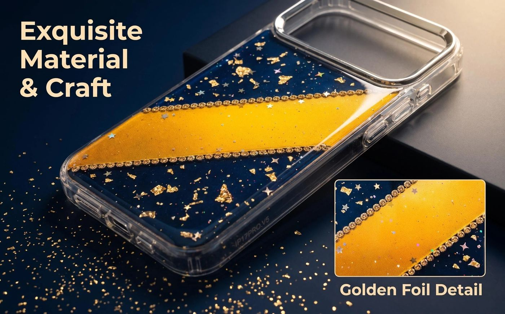
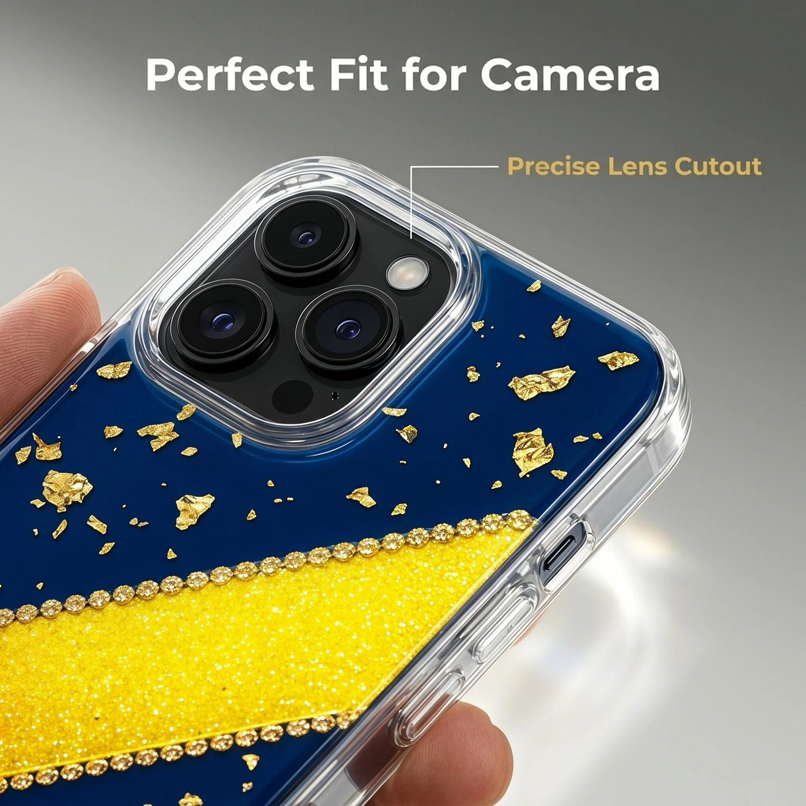
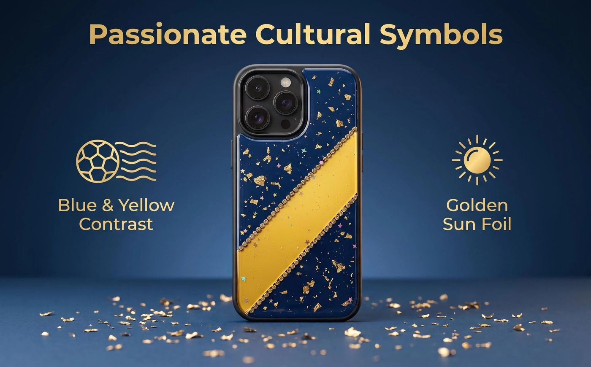
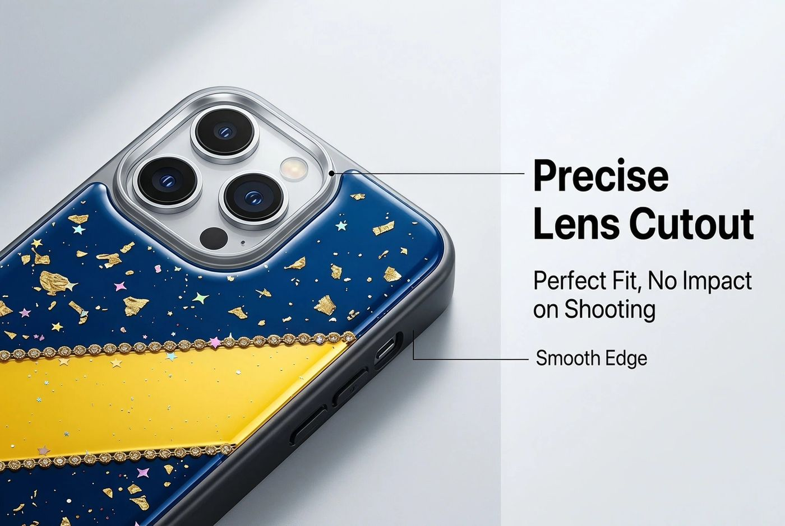
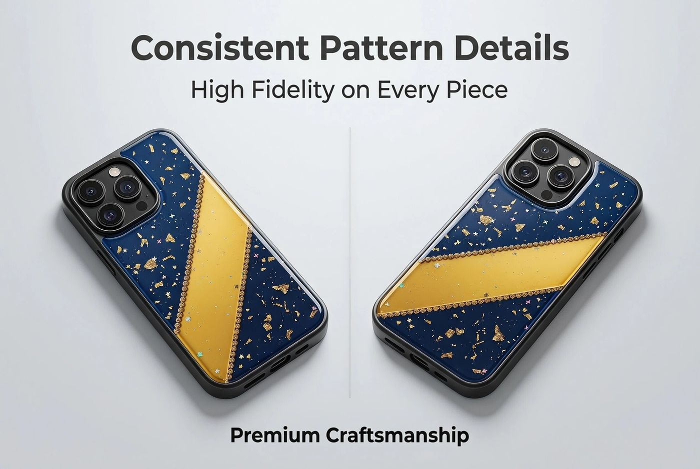

Funda Cultura Futbolera Boca
El azul de Boca se encuentra con la hoja dorada, un guiño al Sol de Mayo en el corazón de la bandera argentina.
El Diseño
Azul profundo y amarillo brillante, cortados en bloques de bordes definidos — esto es lo que en Argentina se conoce como los "colores de Boca", la paleta que llena La Boca, el barrio porteño donde nació Boca Juniors, uno de los clubes de fútbol más emblemáticos del país. Es una combinación de colores que se reconoce a simple vista, mucho antes de asociarla con una camiseta.
Dispersos por toda la funda, pequeños fragmentos de lámina dorada capturan la luz como motas de sol — un guiño directo al Sol de Mayo, el sol en el centro de la bandera argentina, símbolo de libertad, amanecer y nuevos comienzos. Es una referencia más discreta dentro de una historia de color muy llamativa.
Este diseño funciona para el mismo tipo de comprador que el resto de nuestras piezas de Argentina: minoristas y negocios de regalos que atienden a la cultura futbolera y a las comunidades de la diáspora latinoamericana, donde la propia historia de color es suficiente para identificar la pieza — sin necesidad de escudo ni logo.
Artesanía y Estructura
Color audaz, acabado preciso.

Resina con Lámina Dorada
Finos fragmentos de lámina dorada se incorporan a la capa de resina sobre la base azul y amarilla, capturando la luz de forma irregular, como destellos de sol dispersos.

Corte de Cámara de Precisión
La apertura de la cámara se corta a ras del módulo en cada modelo de teléfono compatible, manteniendo los lentes despejados y la funda asentada de forma plana.
Características Clave
Tres detalles que dan vida al diseño.

Colores de Boca
Azul y amarillo de alto contraste, tomados directamente del barrio porteño de La Boca y su cultura futbolera.

Ajuste de Cámara Limpio
Un corte de cámara alineado con precisión mantiene el módulo accesible y el perfil de la funda delgado.

Detalle Consistente
Los valores de color y la ubicación del patrón se mantienen consistentes en toda la producción, así que la muestra que apruebas es la que se envía.
¿Te interesa este diseño, o algo parecido?
Cuéntanos los modelos, cantidades y plazos que necesitas — confirmaremos el precio y pondremos una muestra en marcha.